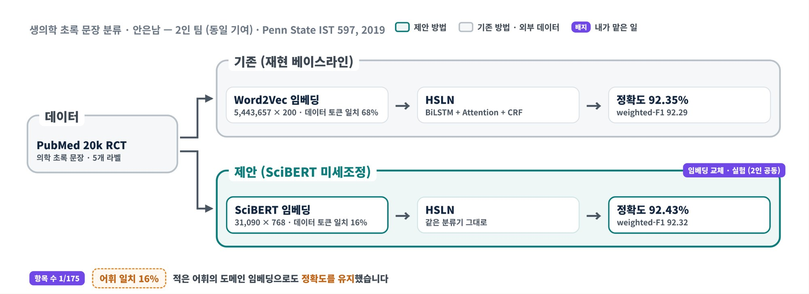

생의학 초록 문장 분류 · BERT·SciBERT 임베딩 비교
생의학 논문 초록 대부분은 구조가 없어 연구자가 방법이나 결과만 골라 읽기 어렵습니다. 기존 문장 분류 모델(HSLN)은 그대로 두고 단어 임베딩만 Word2Vec에서 BERT·SciBERT로 바꿔 비교했습니다. 지도 C. Lee Giles 교수.
내가 맡은 일
- 역할
- 임베딩 교체 실험
- 기간
- 2019.09 – 2019.12
- 팀
- 2인 팀(동일 기여) · Penn State IST 597 딥러닝 수업
실험
BERT·SciBERT에서 단어 임베딩을 추출해 Word2Vec을 대체하고, 기준선 재현을 포함한 5가지 조건 실험
성과
1/175
임베딩 어휘 수
더 작은 임베딩으로 같은 수준의 정확도
92.35 → 92.43%
정확도
PubMed 20k RCT, 단일 실행
화면

구조 결정
1. 모델은 두고 임베딩만 바꾼다
왜: 무엇이 성능을 바꿨는지 알려면 한 번에 한 변수만 바꿔야 합니다.
바꾼 구조: 분류기와 데이터는 그대로 두고 임베딩만 교체했습니다.
결과: 데이터 토큰 중 사전학습 어휘에 있는 비율이 16%로 낮은 점(Word2Vec 68%)을 성능의 한계 요인으로 분석했습니다.
한계
단일 실행 결과라 실행마다의 편차는 확인하지 못했습니다.
TensorFlowBiLSTM-CRFBERTSciBERT